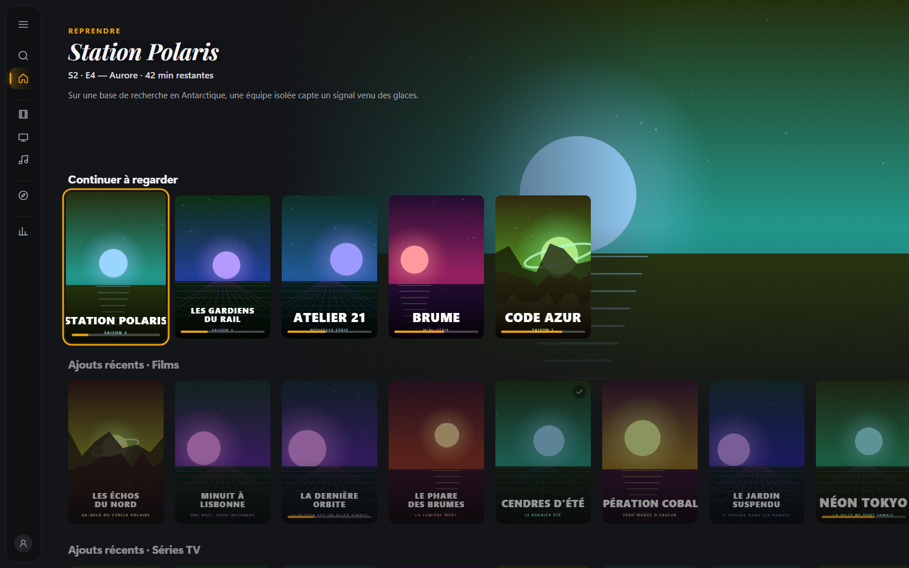
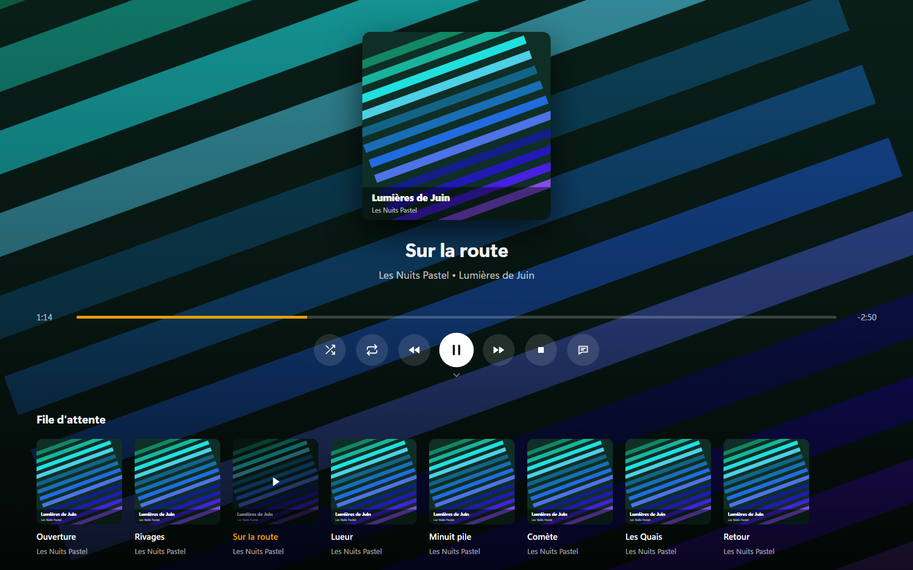
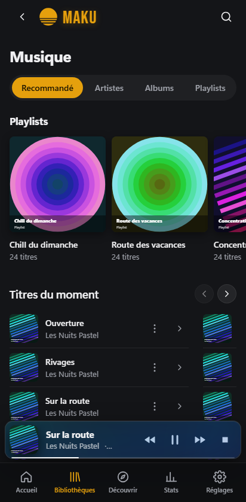

Accueil › Fonctionnalités › TV, téléphone et voiture
Sur chaque écran
Une interface pour la télécommande, une autre pour le pouce.
Maku ne se contente pas d'agrandir ou de rétrécir la même page. Sur la télé, sur le téléphone et dans la voiture, il change de forme pour s'utiliser naturellement, et reste fluide même sur un matériel modeste.

Android TV, Google TV et Fire TV
Fait pour la télécommande
La fiche du titre sélectionné en haut, des rangées de jaquettes en dessous, un menu qui se déplie quand on y entre. La sélection, entourée d'or, est toujours visible en entier, loin des bords de l'écran.
- OK ouvre ou lance, Retour ramène exactement à la jaquette quittée, et ne quitte Maku que depuis l'accueil.
- Appui long sur OK : le menu du titre (reprendre ou recommencer, vu, liste de suivi, ajout à une playlist, informations sur le fichier… et, avec Plex, la note en étoiles).
- Pendant un film, le premier appui ne fait que réafficher les commandes, sans mettre en pause : on voit le temps restant sans couper le film. Les touches lecture, pause, suivant et précédent fonctionnent, tout comme les touches séparées lecture, pause, arrêt, retour et avance rapides, pour un film comme pour la musique.
- Le résumé d'une fiche s'affiche sur plus de lignes que sur ordinateur, où un clic le déplie.
- Les Réglages en onglets sur une ligne (Compte, Lecteur, Interface, Services), la page sur toute la largeur de l'écran : gauche et droite changent de rubrique, bas entre dans la page.
- En pause, l'économiseur d'écran du téléviseur peut démarrer : l'image fixe ne reste pas affichée indéfiniment.
- Une interface allégée : pas de flou ni d'animation coûteuse, pour rester fluide sur les téléviseurs les plus modestes.
- Sans clavier : la connexion à Plex se fait avec un code à saisir sur plex.tv/link depuis le téléphone, et celle à Jellyfin ou Emby par un QR code à scanner.

Téléphone
Une vraie application mobile
Sur téléphone, Maku prend la forme d'une application mobile : un en-tête compact, des onglets en bas (Accueil, Bibliothèques, Découvrir, Stats, Réglages), le bandeau et « Continuer à regarder » à la taille de l'écran.
- Un appui sur une affiche ouvre sa fiche, un appui long son menu.
- Retour ferme d'abord ce qui est ouvert (fenêtre, menu), puis ramène à l'accueil : passer d'un onglet à l'autre n'empile pas les pages.
- L'ordre des bibliothèques, et celles à masquer, se règlent dans Réglages → Interface.
- Les vidéos passent d'elles-mêmes en paysage et en plein écran, et se mettent en pause quand le casque est débranché. Toucher l'image affiche les commandes, ou les efface, sans mettre en pause. En pause, l'écran peut s'éteindre comme d'habitude.
- La musique en arrière-plan, pilotable depuis la notification, l'écran de verrouillage et un casque Bluetooth.
- Hors ligne : films, épisodes, albums et playlists à télécharger pour le train ou l'avion.


Dans la voiture
Maku apparaît parmi les applications de musique d'Android Auto, avec quatre onglets illustrés de leurs pochettes : Accueil, Artistes (avec une lecture aléatoire de toute la bibliothèque), Albums et Playlists.
« Joue … sur Maku » lance un artiste, un album ou un morceau à la voix. La voiture lit elle-même la musique, même si Maku n'est pas ouvert sur le téléphone, et passe par l'adresse distante du serveur hors du Wi-Fi (avec Plex). Avec Jellyfin ou Emby, la voiture l'indique : sa bibliothèque musicale ne fonctionne qu'avec un serveur Plex.
Maku n'apparaît pas dans la voiture ?Sur tablette
L'interface de l'ordinateur, adaptée au toucher : grandes affiches, fiches immersives, menu de gauche. La musique continue en arrière-plan comme sur le téléphone, et les téléchargements y sont aussi.
Pour l'administrateur du serveur, le tableau de bord y est disponible.
Sur ordinateur
Sous Windows, la vidéo s'affiche directement dans la fenêtre de Maku. Sous Linux et macOS, elle s'ouvre dans une fenêtre mpv en plein écran, que Maku pilote à distance.
Les touches multimédia du clavier fonctionnent, et sous Linux, ce qui joue apparaît dans les commandes du bureau. La musique s'envoie sur une enceinte Chromecast en un clic.
Toujours à jour
Les nouveautés arrivent toutes seules
Au lancement, une fenêtre présente la nouvelle version, ses nouveautés et ses corrections, dans votre langue. Un clic télécharge et installe le bon paquet, y compris sur Android TV, où installer une application à la main est fastidieux.
- Maku vérifie que le paquet vient bien des versions publiées, et que son empreinte est exactement celle annoncée.
- Version du Microsoft Store ou de l'Amazon Appstore : c'est le magasin qui s'en charge.
Vos réglages vous suivent
Couleur, fond, langue, accueil personnalisé et ordre des bibliothèques se règlent sur chaque appareil, pour que la télé du salon et le téléphone aient chacun leurs habitudes.
Le guide d'installation →